Software Design
Contents
- Introduction
- Software abstraction & modeling
- Software development process
- Requirements engineering with UML
- Structure modeling with UML
- Object-oriented design patterns in UML
- Modeling behavior with UML State Machines
- Sequence Diagrams
Introduction
We are only evaluated on weeks 1-6.
Lectures are not definitive, study the books (links on canvas).
Grading: project is 70%, exam is 30% (!)
project goal: develop a ROBOSEARCH system with various UML-based techniques. implement a simple demonstrator via a robotic 3D simulator.
Software abstraction & modeling
software engineering: the application of engineering to software. a programmer writes a complete program, a software engineer creates a component.
engineers abstract away from details that can be safely ignored.
model: simplified/partial representation of reality, defined to accomplish a task or reach an agreement
abstraction: generalizing – setting aside specific and individual features
software design: creating models representing an abstract view of the system
Models
what is a model?
- mapping feature: a model is based on an original
- reduction feature: a model only reflects a relevant selection of the original's properties
- pragmatic feature: a model needs to be usable in place of an original with respect to some purpose
consumer and intent influence the abstraction level of a model
descriptive models:
- a subject is described by the model
- sketches and throw-away models – short life time, used to better understand the reality
- models of ideas and vision about the system to be developed – to exploit model for having feedback before actually implementing the system
- models extracted from a running system or code – e.g. to visualize all calls between Java classes
prescriptive models:
- a model prescribes the subject
- the subject does not yet exist
- the models guide the development of the system
- most common consumers are code generators
- often used for development, so their importance may decay when the system is implemented
Software development process
main activities:
-
requirements engineering
- specifies the main functionalities of the system
- defines the qualities to be met
-
design
- give shape to a system via models
- not a clear-cut sequential process
-
implementation and testing
- involves actual development of the system
- component testing – test individual components independently
- system testing – test the system as a whole (including emergent properties like overall performance)
- acceptance testing – test with customer data to see if the system meets the customer's needs
-
evolution
- software is inherently flexible and can change
Waterfall development process

exists in many variants, all with sequential flow. it's document-driven.
issues: poor agility (when do you know how far you are in the project?), poor quality (cuts if you run out of time), high risk (finding issues in test phase)
critical evaluation:
-
positive:
- precise planning and management – standard-oriented
- postpone implementation to after understanding objectives
- good documentation
-
negative:
- hard to get all requirements once and for all (users might not even know what they want)
- rigid
- no feedback from the customer
- no parallelism, all phases are blocking (because sequential)
- a single delivery date at the end
Agile development process
iterative development processes with:
- frequent releases of the product
- continuous interaction between dev team and customer
- reduced product documentation
- continuous and systematic assessment of produced value and risks
agile in practice:
- make a list
- estimate
- set priorities
- start executing
- update the plan at run time
critical evaluation:
-
positive:
- acceptance of change – less risky
- frequent and short iterations
- emphasis on working code
- associates a test with every piece of functionality
- continuous integration and delivery
-
negative:
- feature-based development & ignorance of dependencies
- no strong quality plan
- less focus on architecture of system (in fact, dismisses everything that isn't shippable)
Requirements engineering with UML
What is UML?
A unified modeling language, the defacto standard for software design.
pros:
- not tied to a development process
- can be used across the whole life cycle
- general purpose, can model all sorts of shit
- has different representations (graphical, but also text)
main characteristics:
- comprehensive: can describe all parts of a system
- scalable: "zoom in" and add more details if you want
- originally intended for descriptive models
- now also supports prescriptive models
formal modeling language — its core concepts have a well-defined meaning
UML model is represented graphically with diagrams
The different types:

The ones we will use:
- use case diagram: to specify the basic functionality of a software system (requirements)
- class diagram: to define data structures within the system
- state machine diagram: to define intra-object behavior
- sequence diagram: to specify inter-object behavior and communication
a UML model contains everything related to the system. a diagram is just a "window" on the model (shows some parts, but not necessarily everything).
Requirements engineering
the process of establishing:
- features that a system should and will have
- constraints under which it operates and is developed
requirement can range between:
- high-level abstract statement of a feature
- detailed mathematical functional specification
functional (what) vs non-functional (how) requirements
-
functional: services the system should provide, how it should react to inputs, how it should behave in specific situations, opt. what it shouldn't do.
- precise — ambiguous requirements may be interpreted in different ways by developers and users
- complete — they should include descriptions of all facilities required
- consistent — there should be no conflicts or contradictions in descriptions of system facilities
- verifiable — requirements should be directly mapped to parts of system
-
non-functional: constraints on services/functions offered by the system, often apply to system as a whole instead of individual features/services
- system properties and constraints (e.g. reliability, response time, storage requirements)
- may be more critical than functional, like safety requirements
- may affect overall architecture of a system instead of individual components (like organization to minimize communications between robots)
- different types:

in UML: use case diagrams for functional requirements.
How to write requirements specifications:
| Notation | Description |
|---|---|
| Natural language | Use numbered sentences in natural language. Each sentence is one requirement. |
| Structured natural language. | Requirements are written in natural language on standard form/template. Each field gives info about an aspect of the requirement. |
| Design description languages | Use language like programming language, but with more abstract features specifying requirements by defining an operational model of the system. |
| Graphical notations | Graphical models with text annotations. e.g. UML use case and sequence diagrams. |
| Mathematical specifications | Based on math concepts like finite-state machines or sets. Most customers don't understand this so not often used. |
Natural language specification
requirements are written as natural language sentences. used because it's expressive, intuitive, universal, easily understood by customers.
guidelines:
- invent a standard format, use it for all requirements.
- use language in a consistent way ("shall" for mandatory requirements, "should" for desirable requirements)
- highlight text to identify important parts of requirement
- avoid use of computer jargon
- include explanation (rationale) of why a requirement is needed
Use case diagrams
express expectations of customers/stakeholders.
answers questions:
- what is being described? (the system)
- who interacts with the system? (the actors)
- what can the actors do? (use cases)
use case:
- describes functionality expected from system under development
- set of all use cases describes functionality that a system shall provide.
- notations:

actors:
- interact with the system by using use cases, or by being used by use cases.
- represent roles that users adopt (users can have multiple roles)
- not part of the system, so outside of system boundaries.
- human or non-human
-
primary/secondary:
- if primary, has main benefit of execution of use case.
- if secondary, receives no direct benefit.
-
active or passive
- active: initiates execution of the use case
- passive: provides functionality for the execution of the use case

relationships between use cases and actors:
- actors are connected with use cases via associations (solid lines)
- every actors has to communicate with at least one use case
- association is always binary, multiplicities can be specified

relationships between use cases:
-
«include»
- behavior of one use case ('included') is always integrated in the behavior of another use case ('base')

-
«extend»
- behavior of one use case ('extending') may be integrated in behavior of another use case ('base')
- both use cases can also be executed independently of each other
- extension points are written directly in the use case. you can specify multiple extension points.

-
generalization of use cases
- if use case A generalizes use case B, then B inherits behavior of A and may extend/overwrite it. B also inherits all relationships form A.
- A may be labeled {abstract} — cannot be executed directly, only B is executable

relationships between actors
-
generalization
- actor A inherits from actor B. e.g. A can communicate with X and Y, B can only communicate with Y.
- abstract actors are possible

Description of use cases:
- Name
- Short description
- Precondition: prerequisite for successful execution
- Postcondition: system state after successful execution
- Error situations: errors relevant to problem domain
- System state on occurrence of an error
- Actors that communicate with the use case
- Trigger: events which initiate the use case
- Standard process: individual steps to be taken
- Alternative processes: deviations from the standard process
Remember, it's an abstraction. Many small use cases with the same objective should be grouped. Don't decompose functionality into use cases.
Summary of notation


Structure modeling with UML
Class
a construction plan for a set of similar objects of a system

Attribute syntax

Visibility: who is permitted to access the attribute
-
+public, everybody -
-private, only the object itself -
#protected, class itself and subclasses -
~package, classes that are in the same package
/ means that attribute value is derived from other attributes
Type:
-
primitive data type
- pre-defined: Boolean, Integer, UnlimitedNatural, String
- User-defined: «primitive»
- composite: «datatype»
- enumerations: «enumeration»

Multiplicity: number of values an attribute may contain (as [min..max], max can be * meaning no limit)
= Default: the default value that's used if the user doesn't explicitly set a value
properties:
-
[readOnly]- value can't be changed -
[unique]- no duplicates allowed -
[non-unique]- duplicates allowed -
[ordered]- fixed order of values -
[unordered]- no fixed order of values
Operation syntax

Similar to attributes.
parameter:
-
direction
-
in: input parameter (value is expected) -
out: output parameter (adopts a new value after execution of operation) -
inout: combined input/output
-

type: type of return value
Class variable and class operation
Class variable (static): defined only once per class, shared by all instances
Class operation (static): can be used without creating an instance
To distinguish class variables/operations, underline them.
Relationships
Binary association
Connects instances of two classes with one another.

Properties:
- Navigability: an object knows its partner objects, can access their visible attributes and operations (open arrow head, if not then cross). If undefined, bidirectional is assumed.
- Multiplicity: number of objects that can be associated with exactly one object of the opposite side (e.g. one-to-one, one-to-many...)
- Role: how an object is involved in an association relationship
-
xorconstraint: cannot be associated with both at the same time
in Java:
class Professor {...}
class Student {
public Professor[] lecturer;
}
n-ary association
More than two objects involved in the relationship, no navigation directions.

Association class
Assign attributes to relationship between classes instead of to a class.

Needed for n:m associations.
Association class vs regular class:

Can be unique or non-unique.
Aggregation
Shows that class is part of another class.
Properties:
- transitive: if B is part of A and C is part of B, C is also part of A
- asymmetric: not possible for A to be part of B and B to be part of A at the same time
expresses weak belonging of the parts to a whole (parts also exist independently of the whole). one element can be part of multiple other elements at the same time.
Example:

Composition
existence dependency between composite object and its parts. one part can be contained in max one composite object at a point in time. if the composite object is deleted, so are its parts.
A Tire can exist without a Car. A Tire belongs to max one Car:

Generalization
stuff from a superclass is passed to its subclass (attributes, operations, associations, aggregations)
every instance of a subclass is simultaneously an indirect instance of the superclass. subclass inherits all characteristics except private ones. generalizations are transitive. a class may have multiple superclasses/subclasses.

abstract class ensures that there are no direct instances of the superclass.

Creating a class diagram
nouns often indicate classes. adjectives indicate attribute values. verbs indicate operations.
in general, tend towards having deep classes. push complexity as low as possible in the class diagram hierarchy.
focus on:
-
responsibility of each class (private is default,
getterandsettermethods) - knowledge needed by each class (tend toward generality, don't focus on order of tasks)
- usability of operations of each class (exposed APIs should be as easy and intuitive as possible
generalization: "there is difference between research and administrative employees. some research associates hold courses, so they are lecturers."

composition: "a university consists of multiple faculties which are composed of various institutes."

binary association: "each faculty is led by a dean, who is an employee of the university"

shared aggregation: "research associates are assigned to at least one institute"

association class: "research associates can be involved in projects for a certain number of hours"

generalization: "some research associates hold courses. then they are called lecturers."

Object-oriented design patterns in UML
design pattern: a reusable form of solution to a common design problem (like a 'template')
not a finished design, cannot be transformed directly into source code
not prescriptive, so don't memorize them. it's important to understand when and why they're needed.
speaking of, they're not always needed. don't over-complicate shit, you'll end up with a dumpster fire that nobody can maintain.
essential parts of a design pattern
-
Pattern name
- provides common vocab for software designers
-
Intent
- What does the design pattern do?
- What is its rationale and intent?
- What design issue/problem does it address?
-
Solution
- the basic elements providing solution to the problem (structure, participants, collaborations)
-
Consequences
- results and trade offs by applying the pattern
Creational
how objects can be created (maintainability, control, extensibility)
we study the singleton and factory method. then there are also abstract factory, object pool, and prototype.
Singleton
| Name | Singleton |
|---|---|
| Intent |
To ensure that only one instance of a class is allowed in a system. Controlled access to a single object is needed |
| Solution | 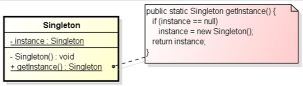 |
| Consequences |
Controlled access to sole instance Reduced name space (fewer 'global' variables) permits variable number of instances |
Implementation
public class SingleObject {
// private constructor, cannot be instantiated from outside
private SingleObject(){}
// create the one single instance
private static SingleObject instance = new SingleObject();
// get the only instance
public static SingleObject getInstance() {
return instance;
}
public void showMessage() {
System.out.println("Hello world!");
}
Factory method
| Name | Factory method |
|---|---|
| Intent |
to abstract process of object creation so that type of created object can be determined at run time to make design more customizable in terms of which objects can be created avoiding the new operator because you don't want to hard code the class to be instantiated
|
| Solution | 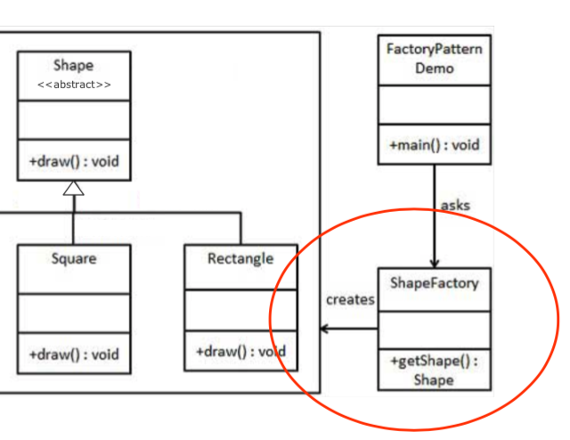 |
| Consequences |
end up with dedicated class to create instances of objects can pass arguments to the class to control the features of the objects |
Implementation
public class ShapeFactory {
public Shape getShape(String shapeTYpe) {
if (shapeType == null) {
return null;
}
if (shapeType.equalsIgnoreCase("CIRCLE")) {
return new Circle();
}
else if (shapeType.equalsIgnoreCase("RECTANGLE")) {
return new Rectangle();
}
else if (shapeType.equalsIgnoreCase("SQUARE")) {
return new Square();
}
return null;
}
}
Structural
how to form larger structures (management of complexity, efficiency)
adapter is studied in this course. also have proxy, bridge, decorator, facade, flyweight, composite, private class data.
Adapter
| Name | Adapter |
|---|---|
| Intent |
to convert interface of class into another interface to let two or more classes with incompatible interfaces work together to wrap an existing class with a new one to have a kinda homogeneous interface that masks diversity of some set of various objects |
| Solution | 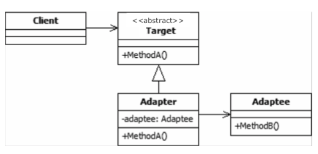 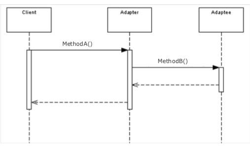 |
| Consequences | single class is responsible to join functionalities of independent/incompatible classes |
Implementation
public class Wrapper {
// the wrapped object
private LegacyComponent legacyComponent;
// constructor
public Wrapper (LegacyComponent instance) {
this.legacyComponent = instance;
}
// call to wrapped method
public int doThis() {
int result = 0;
float value = this.legacyComponent.doThat();
// magic the value into an integer somehow, then
return result;
}
}
Behavioral
how responsibilities can be assigned to objects (objects decoupling, flexibility, better communication)
we study observer and chain of responsibility. there are also command, interpreter, iterator, mediator, memento, null object, state, strategy, template method, and visitor.
Observer
| Name | Observer |
|---|---|
| Intent |
to let some object(s) be notified of state changes in other objects in the system when on object changes state, all dependents are notified and updated automatically |
| Solution |

|
| Consequences |
supports broadcast communication state changes in object(s) should trigger behavior in other objects you can reuse objects without reusing their observers and v-v. you can remove observers without changing the subjects |
Implementation
public abstract class Observer {
protected Subject subject;
public abstract void update();
}
class MappingRover extends Observer {
// specify observed subject in constructor
public MappingRover(Subject subject) P
this.subject = subject;
subject.attach(this);
}
// observers "pull" information
public void update() {
if (this.subject.getState() == 0) {
// map the environment
}
else {
// "come back home", whatever that means
}
}
}
public abstract class Subject {
private List<Observer> observers = new ArrayList<Observer>();
private int state;
public int getState() { ... }
public void setState(int state) { ... } // and notify all observers
public void attach(Observer observer) { ... } // add to observers list
public void detach(Observer observer) { ... } //remove from observers list
public void notifyAllObservers() { ... } // run the update function for each observer in list
}
public static void main(String[] args) {
CentralStation cs = new CentralStation();
cs.setState(0);
MappingRover rover1 = new MappingRover(cs);
CameraRover rover2 = new CameraRover(cs);
CameraRover rover3 = new CameraRover(cs);
cs.setState(1);
}
Chain of responsibility
| Name | Chain of responsibility |
|---|---|
| Intent |
avoid coupling sender of request to receiver by giving more than one object a chance to handle request chain receiving objects and pass request along chain until an object handles it (sequential) |
| Solution | 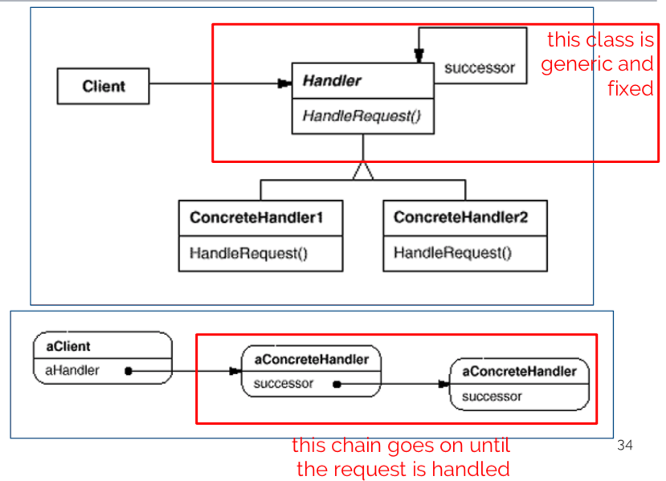 |
| Consequences |
Reduced coupling between objects (every object needs to know its successor) handler(s) are not known a priori and a request might be unhandled you can change responsibilities by changing chain at runtime |
Implementation
public class Task {
private Coordinate coords;
private RequestEnum request;
// basic getters and setters
public Coordinate getcoords() { ... }
public setCoords(Coordinate coords) { ... }
public RequestEnum getRequest() { ... }
public setRequest(RequestEnum request) { ... }
}
public enum RequestEnum {
PICTURE, MAP;
}
public class Coordinate {
private float lat, lon;
// basic getters and setters
public float getLat() { ... };
public setLat(float lat) { ... };
public float getLon() { ... };
public setLon(float lon) { ... };
}
public abstract class TaskHandler {
TaskHandler successor;
publicc void setSuccessor(TaskHandler successor) {
this.successor = successor;
}
public abstract void handleRequest(Task task);
}
public class CameraRover extends TaskHandler {
public void handleRequest(Task task) {
if (task.request == RequestEnum.PICTURE) {
// take a picture
}
else {
// pass on to successor
if (successor != null) {
successor.handleRequest(request);
}
}
}
}
public class Main {
public static TaskHandler setUpChain() {
MapRover mapper = new MapRover();
CameraRover photographer1 = new CameraRover();
CameraRover photographer2 = new CameraRover();
CameraRover photographer3 = new CameraRover();
return mapper;
}
public static void main(Striing[] args) {
TaskHandler chain = setUpChain;
chain.handleRequest(...);
}
}
Modeling behavior with UML State Machines
Introduction
every object has finite set of states during life.
state machine diagram is used to:
- model possible states of system/object
- show how state transitions occur as consequence of events
- show behavior of system in each state
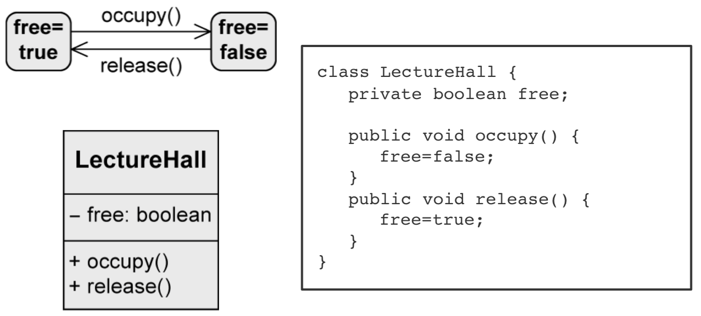
States
states are the nodes of state machine
when a state is active:
- object is in that state
-
all internal activities in that state can be executed:
-
entry/Activity- when object enters the state -
do/Activity- while object remains in this state -
exit/Activity- when object exits the state
-
Transitions
change from one state to another
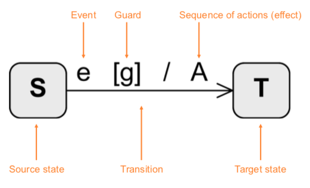
Syntax of transitions:
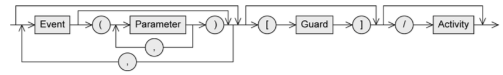
-
Event (trigger)
- can trigger state transition
-
Guard (condition)
- boolean expression
- if event occurs, guard is checked
-
if guard is true:
- all activities in current state are terminated
- exit activity is executed
- transition happens
-
Activity (effect)
- sequence of actions that happen during transition
Types:
- internal:
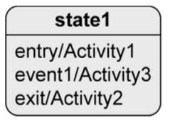
-
if
event1happens, object stays instate1andActivity3runs
- external:
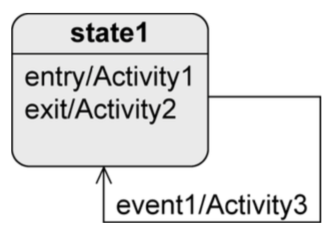
-
if
event1happens:-
object leaves
state1,Activity2runs -
Activity3runs -
object enters
state1andActivity1runs
-
object leaves
Timing of transitions:
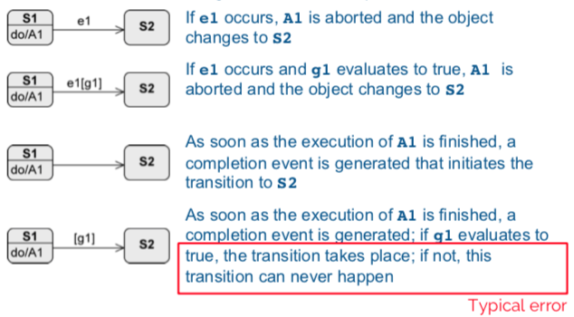
Types of events
-
Signal event: receipt of a signal (
rightmousedown,sendSMS(message)) -
Call event: operation call (
occupy(user, lectureHall),register(exam)) - Time event: time-based state transition (relative or absolute time)
- Any receive event: when any event occurs that doesn't trigger another transition from the active state
- Completion event: automatic when everything is completed in the current state
- Change event: permanently checking when a condition becomes true
A change event is permanently checked. A guard is only checked when the event occurs.
Types of states
Initial state:
- "start" of the diagram
- pseudo-state, system can't remain in this state
- no incoming edges
- outgoing edges have to be mutually exclusive and at least one target must be reachable. no events allowed.
- system immediately switches from initial state.
- notation:
Final state:
- real state
- end of sequence of states
- can remain in this state forever
- notation:
Terminate node:
- pseudo-state
- terminates state machine
- modeled object is deleted
- notation:
Decision node:
- pseudo-state
- used for alternative transitions
- notation: 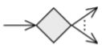
Parallelization node:
- pseudo-state
- splits control flow into multiple concurrent flows
- 1 incoming edge, >1 outgoing edges
- notation: 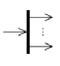
Synchronization node:
- pseudo-state
- merges multiple concurrent flows
- >1 incoming edge, 1 outgoing edge
- notation: 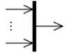
Composite state:
- contains substates, with only one of them active at any time
- arbitrary nesting depth
- higher level events take priority

Orthogonal state:
- composite state divided into two or more regions, separated by dashed line
- one state of each region is always active at some point (concurrent substates)
- final state has to be reached in all regions to trigger completion

Submachine state (SMS)
- to reuse parts of state machine diagrams in other ones
- as soon as submachine state is activated, behavior of submachine is executed (subroutine)
-
notation:
state:submachineState
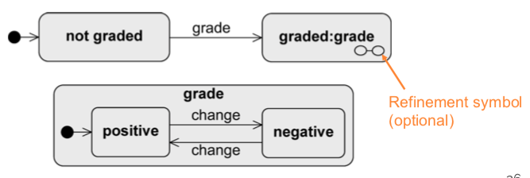
History state:
- remembers the last active substate of a composite state
- activates 'old' substate and all entry activities run sequentially from outside to inside of composite state
- exactly one outgoing edge of history state points to a substate. used if the composite state was never active, or it was exited via final state.
-
shallow history state restores state on the same level of the composite state (
H) -
deep history state restores last active substate over all levels (
H*)
Entry and exit points
Encapsulation mechanism: a composite state shall be entered/exited via a state other than initial and final states.
external transition must/need not know structure of composite state.
Sequence Diagrams
Introduction
it's a way to model interactions between objects
interaction specifies how messages and data are exchanged between objects
interaction partners: human (lecturer, admin) or non-human (server, printer, software)
interactions: conversation between people, message exchange between human and software, communication protocols, sequence of method calls in program, etc.
Basics
Interactions, interaction partners
a sequence diagram is 2D:
- horizontal axis: involved interaction partners
- vertical axis: chronological order of interaction
interaction: sequence of event specifications
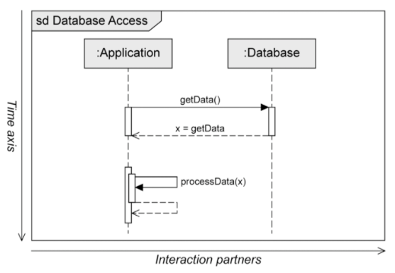
interaction partners are lifelines:
-
head of lifeline is rectangle containing
object:Class - body of lifeline is vertical dashed line representing lifetime of associated object
Messages
message is defined via send and receive events
execution specification (optional):
- continuous bar
- used to visualize when interaction partner executes a behavior
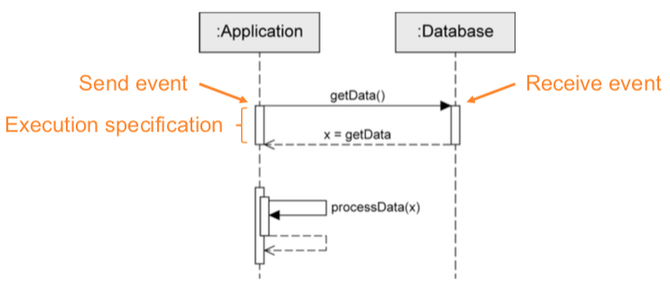
rules:
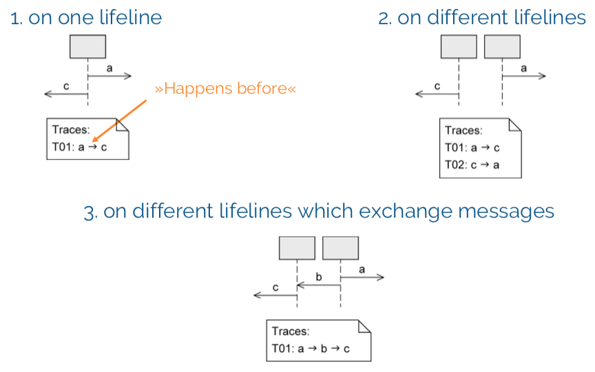
synchronous message:
- sender waits until it has received response message before continuing
-
syntax:
msg(par₁, par₂)-
msg: name of message -
par: parameters
-
- notation: 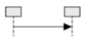
asynchronous message:
- sender continues without waiting for response msg
-
syntax:
msg(par₁, par₂) - notation: 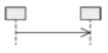
response message:
- can be omitted if content and location are obvious
-
syntax:
att = msg(par₁, par₂): val-
att: return value assigned to variable (optional) -
msg: name of message -
par: parameters -
val: return value
-
- notation: 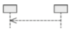
object creation:
- dashed arrow, arrowhead pointing to head of lifeline of object that's being created
-
keyword
new - notation: 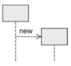
object destruction:
- object is deleted
- large cross at end of lifeline
- notation: 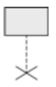
found message:
- sender unknown/not relevant
- notation: 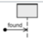
lost message:
- receiver unknown/not relevant
- notation: 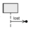
Time-consuming message:
- message with duration
- usually messages transmitted instantly (by assumption); not in this case
- notation: 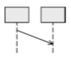
Combined fragments
model various control structures, have 12 predefined operators.
Example:
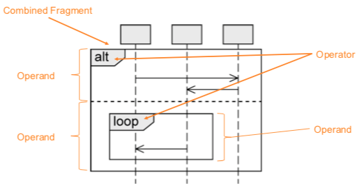
Branches & loops
alt:
- alternative sequence
- like a switch statement, with guards selecting the path to be executed
- guards modeled in square brackets, default true
- guards have to be disjoint so that behavior is deterministic!
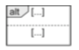
opt:
- optional sequence
- like an if without an else
- actual execution depends on guard
- exactly one operand
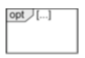
loop:
- repeated sequence
-
min/max number of iterations -
(min..max)or(min, max). default(*), no upper limit. - guard evaluated when min number of iterations took place, checked on each iteration. loop quits if false.
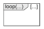
break:
- exception handling
-
one operand with a guard. if true:
- interactions within operand are executed
- remaining operations of surrounding fragment don't run
- interaction continues at next higher level fragment (so like you skip a level)
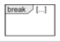
Concurrency and order
seq:
- weak sequencing, default order of events
- can't skip around on the same lifeline
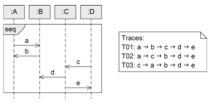
strict:
- strict order
- fixed sequence of events across lifelines
- order of events on different lifelines between different operands is significant
- messages in operand higher up on vertical axis are always exchanged before the ones that are lower
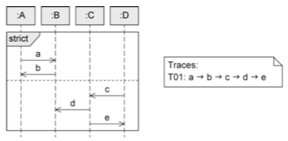
par:
- concurrent interaction
- relax chronological order between messages in different operands
- restrictions in each operand have to be respected
- order of different operands is irrelevant
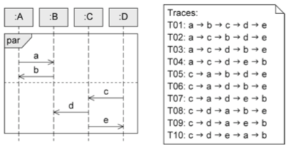
critical:
- atomic interaction
- make sure that certain parts of interaction aren't interrupted by unexpected events
- always has to be in that order
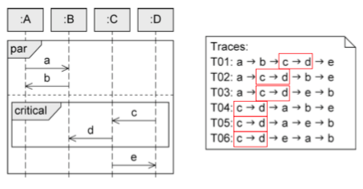
Filters and assertions
ignore:
- irrelevant interaction
- messages can occur at runtime but don't have other significance
-
one operand, irrelevant messages in curly brackets after keyword
ignore
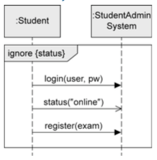
consider:
- relevant interaction with a particular importance
- one operand. "dual" to ignore fragment
- considered messages in curly brackets
-
and yes, you can use
ignoreinstead ofconsiderand vice-versa
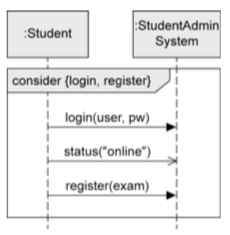
assert:
- asserted interaction
- mandatory interactions. the model is complete. can't have any deviations.
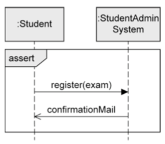
neg:
- invalid interaction
- describe situations that must not occur
- depicting relevant but incorrect sequences
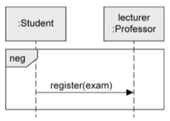
Further language elements
time constraints:
-
point in time for event occurrence:
after(5sec),at(12.00) -
time period between two events:
{lower..upper} -
now: current time - duration: calculation of duration of message transmission
Interaction reference:
- integrates one sequence diagram in another sequence diagram
-
define with
sd namein the corner, then use the name in the diagram withrefin the corner
Gate:
- allows to send and receive messages beyond boundaries of interaction fragment
state invariant:
- asserts certain condition has to be true at certain time
- if state invariant is not true, either model or implementation is wrong
- notations:
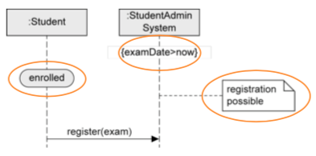